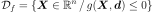
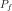
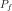
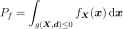
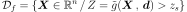
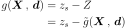
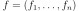

Event¶
-
class
Event(*args)¶ Event.
- Available constructor:
Event()
Event(antecedent, comparisonOperator, threshold)
Event(antecedent, domain)
Event(process, domain)
Parameters: - antecedent :
RandomVectorof dimension 1 Output variable of interest.
- comparisonOperator :
ComparisonOperator Comparison operator used to compare antecedent with threshold.
- threshold : float
threshold we want to compare to antecedent.
- domain :
Domain Domain failure.
- process :
Process Stochastic process.
Notes
An event is defined as follows:

where
 denotes a random input vector, representing the sources
of uncertainties,
denotes a random input vector, representing the sources
of uncertainties,  is a determinist vector, representing the
fixed variables and
is a determinist vector, representing the
fixed variables and  is the limit state function of
the model.
The probability content of the event
is the limit state function of
the model.
The probability content of the event  is :
is :
Here, the event considered is explicited directly from the limit state function
 : this is the classical structural reliability
formulation. However, if the event is a threshold exceedance, it is useful to
explicite the variable of interest
: this is the classical structural reliability
formulation. However, if the event is a threshold exceedance, it is useful to
explicite the variable of interest  ,
evaluated from the model
,
evaluated from the model  . In that case, the event
considered, associated to the threshold
. In that case, the event
considered, associated to the threshold  has the formulation:
has the formulation:
and the limit state function is:

is the threshold exceedance probability, defined as:
Examples
An event created from a limit state function:
>>> import openturns as ot >>> myFunction = ot.SymbolicFunction(['E', 'F', 'L', 'I'], ['-F*L^3/(3*E*I)']) >>> myDistribution = ot.Normal([50.0, 1.0, 10.0, 5.0], [1.0]*4, ot.IdentityMatrix(4)) >>> vect = ot.RandomVector(myDistribution) >>> output = ot.RandomVector(myFunction, vect) >>> myEvent = ot.Event(output, ot.Less(), -3.0)
A composite random vector based event:
>>> X = ot.RandomVector(ot.Normal(2)) >>> model = ot.SymbolicFunction(['x0', 'x1'], ['x0', 'x1']) >>> Y = ot.RandomVector(model, X) >>> # The domain: [0, 1]^2 >>> domain = ot.Interval(2) >>> # The event >>> event = ot.Event(Y, domain)
A process based event:
>>> # The input process >>> X = ot.WhiteNoise(ot.Normal(2)) >>> # The domain: [0, 1]^2 >>> domain = ot.Interval(2) >>> # The event >>> event = ot.Event(X, domain)
Methods
getAntecedent()Accessor to the antecedent RandomVector in case of a composite RandomVector. getClassName()Accessor to the object’s name. getCovariance()Accessor to the covariance of the RandomVector. getDescription()Accessor to the description of the RandomVector. getDimension()Accessor to the dimension of the RandomVector. getDistribution()Accessor to the distribution of the RandomVector. getDomain()Accessor to the domain of the Event. getFunction()Accessor to the Function in case of a composite RandomVector. getId()Accessor to the object’s id. getImplementation(*args)Accessor to the underlying implementation. getMarginal(*args)Get the random vector corresponding to the  marginal component(s).
marginal component(s).getMean()Accessor to the mean of the RandomVector. getName()Accessor to the object’s name. getOperator()Accessor to the comparaison operator of the Event. getParameter()Accessor to the parameter of the distribution. getParameterDescription()Accessor to the parameter description of the distribution. getRealization()Compute one realization of the RandomVector. getSample(size)Compute realizations of the RandomVector. getThreshold()Accessor to the threshold of the Event. isComposite()Accessor to know if the RandomVector is a composite one. setDescription(description)Accessor to the description of the RandomVector. setName(name)Accessor to the object’s name. setParameter(parameters)Accessor to the parameter of the distribution. -
__init__(*args)¶ Initialize self. See help(type(self)) for accurate signature.
-
getAntecedent()¶ Accessor to the antecedent RandomVector in case of a composite RandomVector.
Returns: - antecedent :
RandomVector Antecedent RandomVector
in case of a
CompositeRandomVectorsuch as: .
.
- antecedent :
-
getClassName()¶ Accessor to the object’s name.
Returns: - class_name : str
The object class name (object.__class__.__name__).
-
getCovariance()¶ Accessor to the covariance of the RandomVector.
Returns: - covariance :
CovarianceMatrix Covariance of the considered
UsualRandomVector.
Examples
>>> import openturns as ot >>> distribution = ot.Normal([0.0, 0.5], [1.0, 1.5], ot.CorrelationMatrix(2)) >>> randomVector = ot.RandomVector(distribution) >>> ot.RandomGenerator.SetSeed(0) >>> print(randomVector.getCovariance()) [[ 1 0 ] [ 0 2.25 ]]
- covariance :
-
getDescription()¶ Accessor to the description of the RandomVector.
Returns: - description :
Description Describes the components of the RandomVector.
- description :
-
getDimension()¶ Accessor to the dimension of the RandomVector.
Returns: - dimension : positive int
Dimension of the RandomVector.
-
getDistribution()¶ Accessor to the distribution of the RandomVector.
Returns: - distribution :
Distribution Distribution of the considered
UsualRandomVector.
Examples
>>> import openturns as ot >>> distribution = ot.Normal([0.0, 0.0], [1.0, 1.0], ot.CorrelationMatrix(2)) >>> randomVector = ot.RandomVector(distribution) >>> ot.RandomGenerator.SetSeed(0) >>> print(randomVector.getDistribution()) Normal(mu = [0,0], sigma = [1,1], R = [[ 1 0 ] [ 0 1 ]])
- distribution :
-
getDomain()¶ Accessor to the domain of the Event.
Returns: - domain :
Domain Describes the domain of an event.
- domain :
-
getFunction()¶ Accessor to the Function in case of a composite RandomVector.
Returns: - function :
Function Function used to define a
CompositeRandomVectoras the image through this function of the antecedent:
.
- function :
-
getId()¶ Accessor to the object’s id.
Returns: - id : int
Internal unique identifier.
-
getImplementation(*args)¶ Accessor to the underlying implementation.
Returns: - impl : Implementation
The implementation class.
-
getMarginal(*args)¶ Get the random vector corresponding to the
marginal component(s).Parameters: - i : int or list of ints,

Indicates the component(s) concerned.
 is the dimension of the
RandomVector.
is the dimension of the
RandomVector.
Returns: - vector :
RandomVector RandomVector restricted to the concerned components.
Notes
Let’s note
 a random vector and
a random vector and
![I \in [1,n]](../../_images/math/af6589225695f7bb6b5d7236ccb1a6626b557dbe.svg) a set of indices. If
a set of indices. If  is a
is a
UsualRandomVector, the subvector is defined by . If is a
. If is a
CompositeRandomVector, defined by with ,
 some scalar functions, the subvector is
some scalar functions, the subvector is
 .
.Examples
>>> import openturns as ot >>> distribution = ot.Normal([0.0, 0.0], [1.0, 1.0], ot.CorrelationMatrix(2)) >>> randomVector = ot.RandomVector(distribution) >>> ot.RandomGenerator.SetSeed(0) >>> print(randomVector.getMarginal(1).getRealization()) [0.608202] >>> print(randomVector.getMarginal(1).getDistribution()) Normal(mu = 0, sigma = 1)
- i : int or list of ints,
-
getMean()¶ Accessor to the mean of the RandomVector.
Returns: - mean :
Point Mean of the considered
UsualRandomVector.
Examples
>>> import openturns as ot >>> distribution = ot.Normal([0.0, 0.5], [1.0, 1.5], ot.CorrelationMatrix(2)) >>> randomVector = ot.RandomVector(distribution) >>> ot.RandomGenerator.SetSeed(0) >>> print(randomVector.getMean()) [0,0.5]
- mean :
-
getName()¶ Accessor to the object’s name.
Returns: - name : str
The name of the object.
-
getOperator()¶ Accessor to the comparaison operator of the Event.
Returns: - operator :
ComparisonOperator Comparaison operator used to define the
Event.
- operator :
-
getParameter()¶ Accessor to the parameter of the distribution.
Returns: - parameter :
Point Parameter values.
- parameter :
-
getParameterDescription()¶ Accessor to the parameter description of the distribution.
Returns: - description :
Description Parameter names.
- description :
-
getRealization()¶ Compute one realization of the RandomVector.
Returns: - aRealization :
Point Sequence of values randomly determined from the RandomVector definition. In the case of an event: one realization of the event (considered as a Bernoulli variable) which is a boolean value (1 for the realization of the event and 0 else).
See also
Examples
>>> import openturns as ot >>> distribution = ot.Normal([0.0, 0.0], [1.0, 1.0], ot.CorrelationMatrix(2)) >>> randomVector = ot.RandomVector(distribution) >>> ot.RandomGenerator.SetSeed(0) >>> print(randomVector.getRealization()) [0.608202,-1.26617] >>> print(randomVector.getRealization()) [-0.438266,1.20548]
- aRealization :
-
getSample(size)¶ Compute realizations of the RandomVector.
Parameters: - n : int,

Number of realizations needed.
Returns: - realizations :
Sample n sequences of values randomly determined from the RandomVector definition. In the case of an event: n realizations of the event (considered as a Bernoulli variable) which are boolean values (1 for the realization of the event and 0 else).
See also
Examples
>>> import openturns as ot >>> distribution = ot.Normal([0.0, 0.0], [1.0, 1.0], ot.CorrelationMatrix(2)) >>> randomVector = ot.RandomVector(distribution) >>> ot.RandomGenerator.SetSeed(0) >>> print(randomVector.getSample(3)) [ X0 X1 ] 0 : [ 0.608202 -1.26617 ] 1 : [ -0.438266 1.20548 ] 2 : [ -2.18139 0.350042 ]
- n : int,
-
getThreshold()¶ Accessor to the threshold of the Event.
Returns: - threshold : float
Threshold of the
Event.
-
isComposite()¶ Accessor to know if the RandomVector is a composite one.
Returns: - isComposite : bool
Indicates if the RandomVector is of type Composite or not.
-
setDescription(description)¶ Accessor to the description of the RandomVector.
Parameters: - description : str or sequence of str
Describes the components of the RandomVector.
-
setName(name)¶ Accessor to the object’s name.
Parameters: - name : str
The name of the object.
-
setParameter(parameters)¶ Accessor to the parameter of the distribution.
Parameters: - parameter : sequence of float
Parameter values.